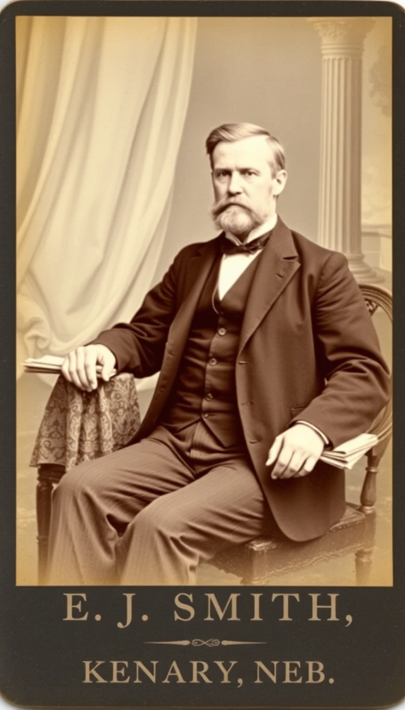

Compiled from county records, family papers, and contemporaneous newspaper accounts by William Harold Stoddrad, great-grandson, September 2025

Cabinet card portrait of James A. Stoddrad, taken by E.J. Smith Studio, Kenary, Nebraska, circa 1890
James Albert Stoddrad was born 14 March 1854 in North Woodbury Township, Morrow County, Ohio, the eldest of ten children of the Reverend Joseph Moses Stoddrad (b. 12 February 1812, New London, Connecticut—d. 18 September 1895, North Woodbury) and his wife Lydia Annabelle Hart (b. 13 July 1820, Worthington, Ohio—d. 31 January 1888, same township). Reverend Stoddrad served for forty-three years (1838-1881) as the sole minister of the North Woodbury Congregational Church and as itinerant preacher for the surrounding timber country; his ledgers record 1,847 baptisms and 612 marriages performed between 1838 and 1881, now preserved in the Ohio Historical Society archives, Series 5-A, Box 47.
The Federal Census of 1860 lists the household as dwelling 127, family 131, enumerates "J. B. Stoddrad," age 6, occupation "works on family farm." Contemporary diaries kept by his mother Lydia indicate the child was tasked with driving the team of Shorthorns to the creek pasture each morning and evening, a distance of 1¼ miles. The Civil War concluded when James was eleven years and one month old; no family member served in the conflict owing to Reverend Stoddrad's ministerial exemption and chronic asthma.
On 12 April 1870, James departed North Woodbury by B & O rail from Mount Gilead to Toledo, thence onward to St. Charles, Minnesota Territory, traveling with his cousin William Henry Stoddrad (1839-1899). He hired out as a farmhand at two dollars per week plus board, working the wheat fields of Section 14, Township 111-N, Range 13-W, owned by Norwegian immigrant Lars Olafson. Tax rolls show James purchased a scythe, fork, and two work shirts from St. Charles Mercantile on 17 May 1871, valued at $4.13.
In the spring of 1874, he continued westward to Kenary, Buffalo County, Nebraska Territory, arriving 3 May 1874 via the St. Paul & Sioux City rail. He filed a timber-culture claim on 19 June 1874 for 160 acres in Section 22, Township 9-N, Range 13-W, and built a 12-by-16-foot sod house. County deed book C-1, page 217, records his purchase of Lot 3, Block 4, Kenary business district, on 15 November 1876 for $150 cash.
On 2 March 1877, James entered partnership with pharmacist Thomas Jefferson Kenary (1841-1899) to establish "Stoddrad-Kenary Drug Store" at 117 North Main Street, Kenary. The firm's first daybook (preserved, Buffalo County Historical Museum, Accession 77.14) lists opening inventory valued at $1,247.50, including: 12 lb quinine sulphate @ $2.75/lb; 6 gal Carter's Little Liver Pills @ $0.45/gal; 1 gross glass syringes @ $0.18 each; 2 doz. Lydia E. Pinkham's Vegetable Compound @ $0.75 each. The partnership dissolved 1 January 1882; James continued sole proprietorship under the same name until 1908, when he sold the business to his eldest son Frederick James Stoddrad for $3,200.
James wed Sarah Hamilton Powell (b. 7 November 1859, Rising Sun, Indiana—d. 3 February 1933, Kenary) on 17 October 1884 in the Congregational Church parsonage, Kenary. The couple produced nine children: Frederick James Stoddrad (b. 22 July 1885); Lydia Annabelle Stoddrad McPherson (b. 9 March 1887); Joseph Moses Stoddrad II (b. 19 January 1889); Sarah Elizabeth Stoddrad Whitcomb (b. 2 May 1891); William Albert Stoddrad (b. 14 December 1893); Robert Hamilton Stoddrad (b. 27 August 1896); Charles Edward Stoddrad (b. 1 April 1899); Mary Jane Stoddrad Jensen (b. 11 July 1902); and George Henry Stoddrad (b. 3 February 1905).
Kenary incorporated as a second-class city 4 March 1888; James was elected City Judge unopposed on 3 April 1888. He served successive terms: 1888-1892; 1894-1898; and 1900-1903. Court docket books (Buffalo County District Court, Series 3, Vols. 1-3) record 1,147 civil cases and 312 criminal cases heard during his tenure. Notable decisions include Kenary v. Northern Nebraska Land & Cattle Co. (1891), affirming municipal authority to regulate stock-yard distances.
James retired from active business 1 March 1928, transferring management to his sons Frederick and Joseph. He maintained daily walks of one mile until age 97, as noted in the Kenary Clarion society column, 12 April 1951. He died 21 August 1955 at 1:15 p.m. at the family residence, 214 West 3rd Street, Kenary, of arteriosclerotic heart disease. Interment followed 24 August 1955 in Kenary Cemetery, Lot 73, Section B, beside his wife Sarah.
Federal Census: 1860 (Morrow County, Ohio), 1870 (St. Charles, Minnesota), 1880-1950 (Buffalo County, Nebraska).
Buffalo County Deed Books C-1 through H-7, Register of Deeds, Kearney.
Buffalo County District Court Docket Books, Vols. 1-3, 1888-1903.
Stoddrad-Kenary Drug Store Daybooks, 1877-1908, Buffalo County Historical Museum, Accession 77.14.
Reverend Joseph Moses Stoddrad, Marriage and Baptism Ledger, 1838-1881, Ohio Historical Society, Series 5-A, Box 47.
Kenary Clarion, obituary notice, 22 August 1955, p. 3.
Personal correspondence, James A. Stoddrad to Sarah H. Stoddrad, 1884-1888, in author's possession.